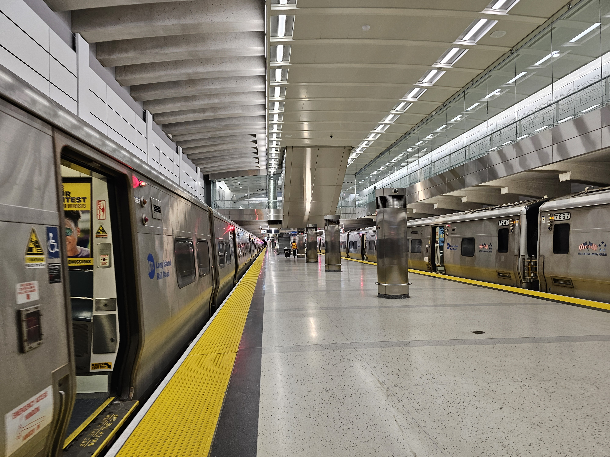
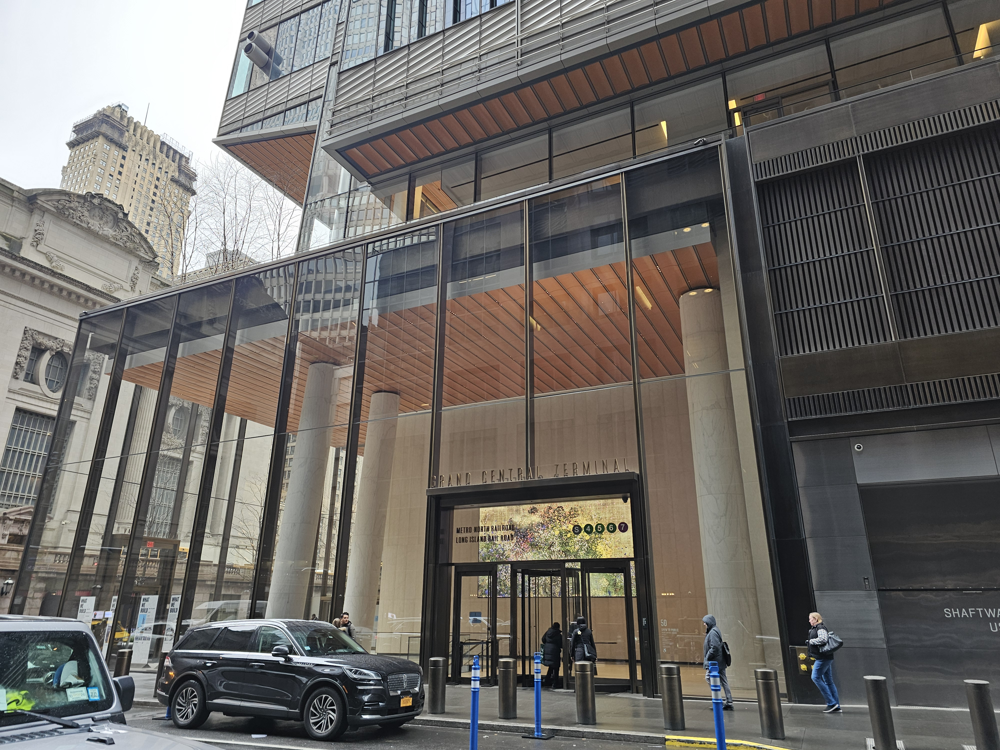
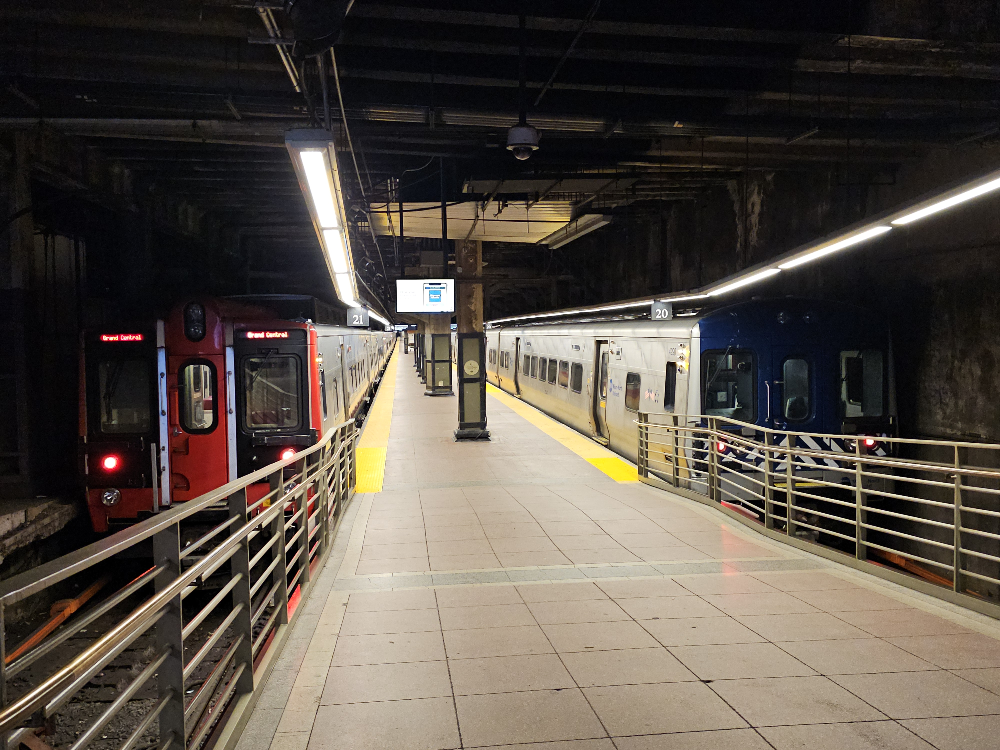
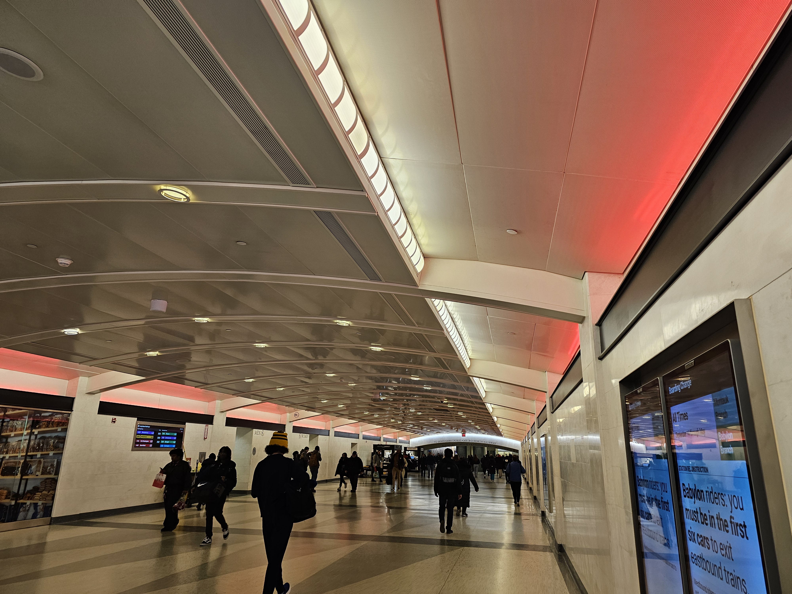
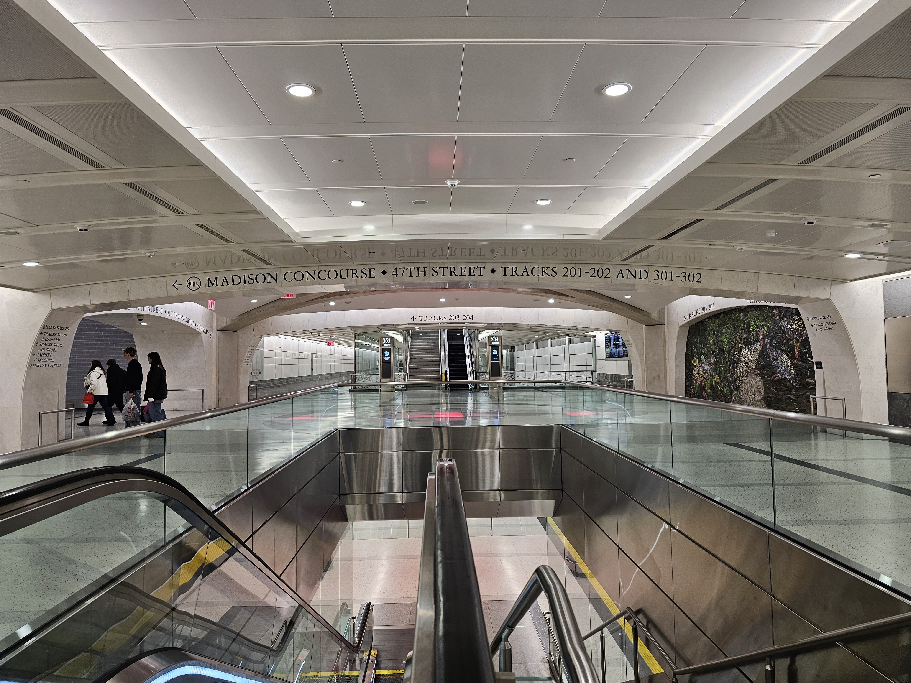

The newest addition to the LIRR Family!

Where Is Grand Central Madison?
 Main Entrance:
Main Entrance:
383 Madison Avenue,
New York, NY 10017
Near the Corner of 47th Street and Madison Ave


Grand Central Terminal (3 Entrances):
89 East 42nd Street,
New York, NY 10017
The Dining Concourse on the Lower Level Is The Most Direct Entrance.
43rd Street and One Vanderbilt area.
The Biltmore Room.

One Vanderbilt:
10 Vanderbilt Avenue,
New York, NY 10017
Enter the building: You can take the stairs or the elevator down to Floor -4.
Connections To?


 At Grand Central-42nd Street Subway Station.
At Grand Central-42nd Street Subway Station.
Use the One Vanderbilt Area of Grand Central LIRR, for the fastest connections!

Hudson, Harlem, New Haven lines.
At Grand Central Terminal. Through the Main Hall (Tracks 11-42), Or Lower Hall (101-117).
Tickets, Hours, Access Points, other Info?
NOTE: Grand Central Madison is open daily from 5:30 am to 2 am.
It is CLOSED from 2am to 5:30am.
During the closed hours, please use the LIRR from Penn Station instead.
Ticket Machines:
You can buy Tickets from the Ticket Office Booth between the 46th and 47th Street area on the Concourse level.

You can also buy Tickets from the Machines. These are located at the 44th, 45th, and 47th Street areas on the Concourse level.
Restrooms:
There are 2 ADA Restrooms available on concourse level only!
One is near the 45th Street area. The other is near the ticket office between 46th and 47th Streets.

The restrooms here at 45th Street, are present in the 2 openings in the wall, in this picture.
Accessing the LIRR:
From the concourse level, escalator banks will take you to/from the Mezzanine, where you can find the tracks.

These are located on every block throughout the complex, at 45th, 46th, 47th, and 48th Streets.
There is also an elevator that will take you from the LIRR concourse to/from the LIRR Mezzanine.
It is located between the 46th and 47th Street escalator banks.
There are 8 tracks, 4 platforms, and 2 levels. The upper level host tracks 201-204, lower hosts 301-304.
Use the mezzanine to find your track and train.

Street-to-Concourse Elevators:
There are many elevators sprinkled across the complex.
There are 3 Street-To-Concourse Elevators.

One at 44th Street, near 49 East 44th Street, shown above as an Elevator example.
One near 47th Street and Madison Avenue.
One at 48th Street, near 280 Park Avenue.
There is also the Concourse-to/from-Mezzanine Elevators, near the 46/47th Street area.